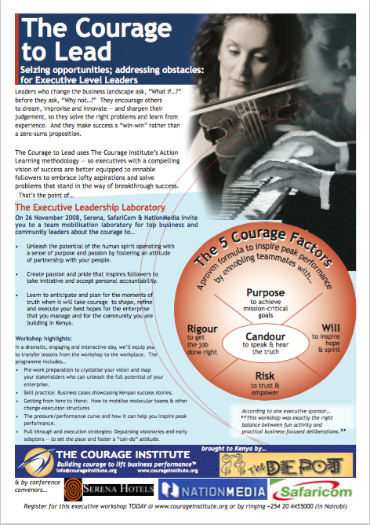
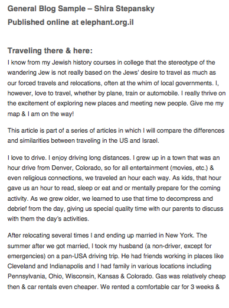
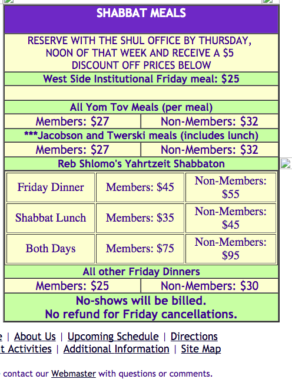
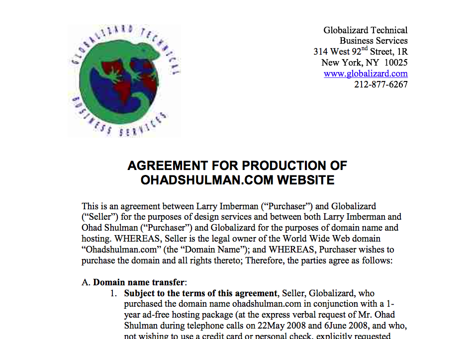

C-Lion
SOFTWARE ENGINEER
C-Lion is a software developer and HCI designer, specializing
in technical educational software and web applications. After
designing an online math learning center for Mercy College and
teaching online computer science courses for the Michigan Jewish Institute,
managing the the technical team for the deployment of a MOOC course
and adminstering the NovoEd site for the Open Doors Group's MOOC course
has been a more recent project.
These software applications are influenced by years of expertise
as an electronics and maintenance technician keeping the runways open at
NYC's JFK and LaGuardia airports and maintaining a fleet of over 500 vehicles
in a high state of readiness for the immediate deployment of a US Army
mobile general hospital. In both cases, there was a constant need for creating
new technical training, both in digital form and "on the job".
Code Snippets
Graphic Ad Insert
This ruby program will prompt the user for a temperature in degrees Celsius and let the user know what the corresponding temperature is in Fahrenheit.
def celsius_to_fahrenheit(celsius)
return celsius * 1.8 + 32
end
puts "What is the temperature in Celsius? "
celsius = gets.chomp.to_f
puts "You said the temperature is #{celsius} Celsius."
puts "That means the real temperature is #{celsius_to_fahrenheit(celsius)} Fahrenheit."
def position(n)
if n == 0
return "Take a new number please. An error has occured and you are not on the wait list yet. "
elsif n > 10 && n < 20
return "You are in #{n}th place on the wait list. "
elsif n % 10 == 1
return "You are in #{n}st place on the wait list. "
elsif n % 10 == 2
return "You are in #{n}nd place on the wait list. "
elsif n % 10 == 3
return "You are in #{n}rd place on the wait list. "
else
return "You are in #{n}th place on the wait list. "
end
end
puts "Enter your ticket number. "
ticket = gets.to_i
puts ticket
puts position(ticket)
Ordinal Challenge
This ruby program will convert a plain number to the ordinal of that number. So for example, if the user enters 2, it will display 2nd. If the user enters 3 it will display 3rd, etc.
Foo-Bar
This ruby program is an adaptation of the classic technical interview problem which displays sequences of the the Foo-Bar pattern.
def fooBar(n)
n.times do |n|
n = n + 1
if n % 3 == 0 && n % 5 == 0
puts "FooBar"
elsif n % 3 == 0
puts "Foo"
elsif n % 5 == 0
puts "Bar"
else
puts n
end
end
end
puts "How many times to play? Please enter a number greater than zero. "
times = gets.to_i
puts fooBar(times)
Marketing
Two-sided Full Page Ad
created in Adobe Illustrator

A full page graphic to advertise a porgram used for full page color insert for distribution in paid newpaper. Graphics were selected by the client. Layout work done in Adobe Illustrator. Download Graphic (PDF)
Original Technical Content
for WIMAX web site

Sample page from original web site content written and used online by Eyal-ACC, a leader in WIMAX technology. I redesigned their website layout and provided approximately 35 pages of original content based on interiews with their subject matter expert and other background material provided by the client.
Download Content File (PDF)
Non technical Blog

While working as the system administor for www.Elephant.org.il, a website for the technical writing community, in addition to maintaining site content and assisting with technical upgrades, I prepared and sent out newsletters and wrote blog posts on various topics. Download Blog Post (PDF)
HTML Coded Table

Designed and managed a team of four developers to create and document a custome built website. After site was built I was the webmaster for approximately two years, updating hand-coded tables like this one on a quarterly basis. Download HTML display (PDF)
Custom Logo used to create letterhead

I used the company logo to create a more eyecatching letterhead than the one used on the business cards. The quality is a low resolution because the only copy of this version that I saved in on a letter that had to be scanned. Download letterhead sample(PDF)
C-Lion grew up in Colorado but traded the mountains for the man-made structures and steel structures of Manhatten long enouch to become proficient in , C and C++ and then ran off to play with airplanes, airconditioners and electronics. Since relocating to the mystical mountain city of Tsfat, it seems there must really be something in the air as living there has resulted in a significate rise of proficiency and expertise in the following programming languages and tools: